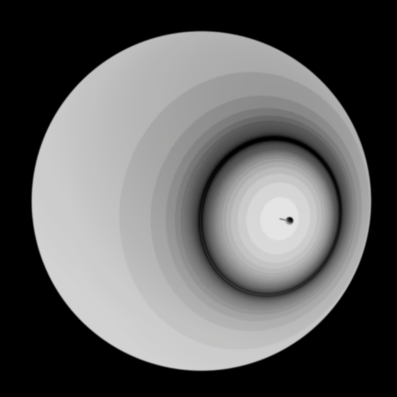

I'm currently leading the SNF research project Explore the Memory of Gravity that aims at a better understanding of the nature of spacetime and providing the theoretical basis for the full exploitation of the potential of upcoming gravitational wave detectors to probe the theory of general relativity. On this page, you will find a little journey down the worm-hole of physics wonders that are yet to be explored.
From Curved Spacetime to Gravitational Waves
One of the most intriguing insights of modern physics is the knowledge that space is not just a rigid container for events to happen in and matter to sit inside. A piece of rock flying through space (like the mood), will generally not follow a straight line, because space itself is curved by the presence of heavy compact matter (like the earth). The through in space created by the earth is so deep that the moon is forever trapped in a circular motion within it. This is the same through that apples fall into when they leave their tree towards the center of earth. If one could compress the earth into a sphere of a few millimeters, the resulting space through would be so large that not even light can escape it anymore: a black hole would be born, the most compact and fabled objects in the universe. Even more curious is perhaps the finding that the same dynamical nature also applies to the notion of time. The presence of heavy compact matter equally changes the flow of time, such that astronauts on the moon age slightly slower than their relatives on earth. This intertwined bending of space and time results in a cosmic dance that we call gravity, described in a unifying notion of spacetime in Einstein's theory of general relativity.
While this knowledge is now already over 100 years old, we only recently managed to directly listen to the music that accompanies this spacetime dance: As a consequence of the dynamical nature of space and time, the universe is filled with a continuous sound of propagating spacetime waves send out by moving matter - like the ripples in a pond or soundwaves in the air. And amazingly, we can nowadays hear the loudest and most energetic events in the universe - collisions of two black holes that shake the spacetime structure in its very foundation - by measuring the changes in spacetime induced by the emitted gravitational waves.
explore
Probing Gravity (2024)
Gravitational waves in full, non-linear general relativity (2022)
Gravitational Memory
credit: PBS Space Time Even more captivating is perhaps the expectation that every binary black hole merger not only emits oscillatory ripples in the form of gravitational waves, but always also leaves behind a permanent imprint in spacetime. In the analogy used above, one could say that a spacetime dance of two black holes always includes two components: 1) a high-frequency component that follows the periodic circles of the two approaching bodies. 2) a deep bass tone underlying the overall energy release, whose lowest frequencies permanently alter the fabric of spacetime. A phenomenon that is known as gravitational memory. These scars in the universe that remember past events are tightly linked to the symmetries that govern relativistic physics, spontaneously breaking them by picking out different non-zero configurations of the vacuum. Such a link to spacetime symmetries explains the universal nature of gravitational memory, an ubiquity that is not only present in gravity theories but is a general feature of so-called infrared - that is low-frequency - physics. To the point where gravitational memory might tell us about a fundamentally classical behavior of the infrared world as opposed to the quantum laws that governs the high-frequency scales. However, while the measurement of the high-frequency wiggles of gravitational waves is evolving into a daily business, the net change in spatial vacuum of the memory effect remains yet to be discovered. This is about to change in the next decade.
explore
A general metric theory perspective on gravitational memory (2025)
Gravitational wave memory beyond general relativity (2023)
LISA
credit: AEI Milde Marketing The direct measurement of gravitational waves was made possible by a tremendous effort of advancing technology to a previously unimagined level to build the so far most sensitive scientific instruments. By measuring the interference patterns of two lasers traveling forth and back along two 4km arms, current gravitational wave detectors can measure changes in spatial distances equivalent to measuring the distance to the nearest star, Proxima Centauri, to within the width of a human hair. Yet, the low-frequency sensitivity of these instruments on earth is fundamentally limited by the vibrations of earths crust. This is one of the main reasons why one of the biggest and most anticipated space missions of the European space agency and its US counterpart is to build a gravitational wave detector in space. An ambitions international collaboration between research institutions and industry partners is currently developing and building three satellites that will share their relative positions among each other through laser signals, building a triangle of several millions of kilometres embedded within the quietness of the cosmic void around earth to sense the whispers of the universe. This laser interferometer space antenna (LISA) will in particular be able to observe the slow dance of the merging of entire galaxies. And excitingly, our simulations of the LISA response to gravitational radiation show that this space-based observatory should also provide us with the first direct detection of gravitational wave memory. Such a measurement would open an observational window deep into radiation theory and the foundational concepts of spacetime symmetries and provide a new handle to test our knowledge of gravity and the dynamics of spacetime.
explore
Measuring gravitational wave memory with LISA (2024)
Electromagnetic Memory
 The unified theory of the electric and magnetic fields, the second crucial long-range force that governs nature and our lives, has been established a long time ago, decades before the gravitational equivalent of general relativity was formulated. It comes therefore perhaps as a surprize that the recent advancements in understanding and describing gravitational memory has a fundamental impact that reaches all the way back to electromagnetism. Indeed, in an unprecedented reverse of history, only years after the first theoretical description of gravitational memory, an electromagnetic analogue was found: electromagnetic radiation too not only consists of the familiar electromagnetic waves that characterize the visible light, radio waves or X-rays, but can include signatures of a permanent offset in the radiation carrying transverse vector potential. Although the physical effect of electromagnetic memory is slightly less dramatic as in the gravitational case, corresponding to a net transverse velocity kick of test charges, it is equally radically connected to asymptotic symmetries and so-called soft theorems of the infrared physics. The most interesting aspect of electromagnetic memory is therefore the possibility of testing these foundational concepts in a fully controllable laboratory setting. Moreover, compared to the gravitational analogue, it is conceivable to obtain a true access to the net effect of the memory, without having to rely on an inference of its existence through the transition stage. And although the memory in electromagnetic radiation was not yet directly measured as well, recent work established a new mechanism to enhance the memory amplitude by several orders of magnitude. This finding could finally push the true zero-frequency signal of memory into the observational range.
explore
Enhanced Electromagnetic Memory (2025)
Cosmology
The dynamical nature of space and time has an additional truly fascinating implication. It entails the possibility that our whole universe is not a static container but evolves in time in its entirety. The study of this cosmic flow of time is called cosmology and is the area of physics that currently poses the biggest open questions to solve. The current standard model describes an ever expanding universe that once started in an extremely dense and hot state after a poorly understood event known as big bang. Amazingly, the afterglow of the big bang can however still be observed today, proving at least that the big bang has happened. This model of cosmology, know as ΛCDM, is based on the gravity theory of general relativity and despite the uncertainty about the big bang it is able to explain the transition from the big bang to the current state of the universe to a great accuracy. Yet, in recent years inconsistencies within the determination of key cosmological observables, such as its expansion rate H0 and the clustering amplitude σ8, could indicate the first clear experimental sign for the need of an ingredient beyond Einstein’s theory of gravity.
explore
Can late-time extensions solve the H0 and σ8 tensions? (2022)
Simultaneously solving the H0 and σ8 tensions with late dark energy (2022)
explore